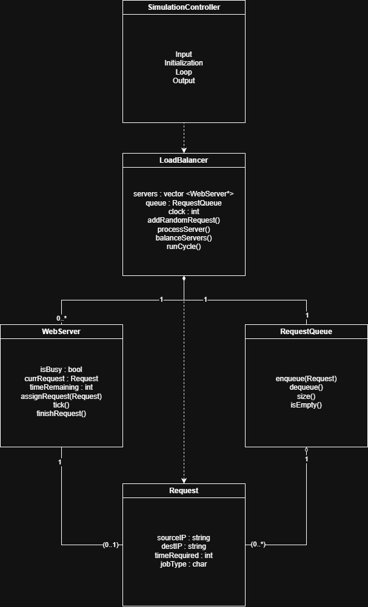

The following UML diagram represents the structural design of the load balancer system, including all primary classes and their relationships.

This simulation models a load balancer responsible for distributing web requests to dynamically allocated web servers. Requests contain a source IP, destination IP, job type, and required processing time.
Handles input configuration
Initializes system components
Runs the main simulation loop
Outputs logs and results
Manages a pool of WebServer objects
Maintains the RequestQueue
Keeps track of simulation time
Adds random incoming requests
Distributes jobs to servers
Adds/removes servers to maintain balance
Processes one Request at a time
Tracks remaining processing time
Marks itself busy/idle
Requests new tasks from the LoadBalancer
Stores pending Request objects
Implements FIFO enqueue/dequeue
Reports size and empty state
Holds IP source, IP destination
Stores time required and job type
SimulationController depends on LoadBalancer : it creates and manages the load balancer during the simulation.
LoadBalancer is composed of a single RequestQueue : it owns the queue and is responsible for managing requests.
LoadBalancer is composed of multiple WebServers : it dynamically allocates and deallocates servers to handle incoming requests.
LoadBalancer depends on Request : it generates requests to add to the queue, but does not own them.
RequestQueue aggregates multiple Requests : it stores pending requests in a first-in-first-out manner.
WebServer is associated with zero or one Request at a time : it processes a request while it is assigned and remains idle otherwise.